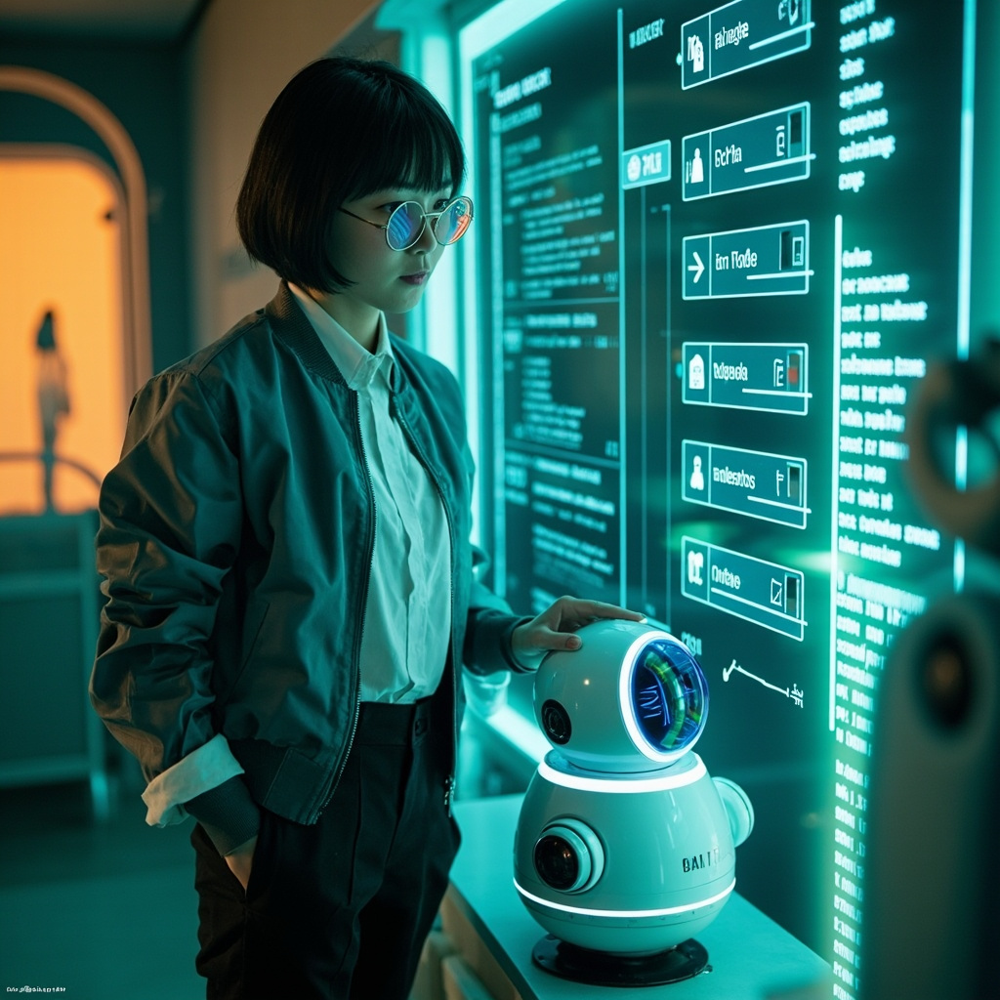
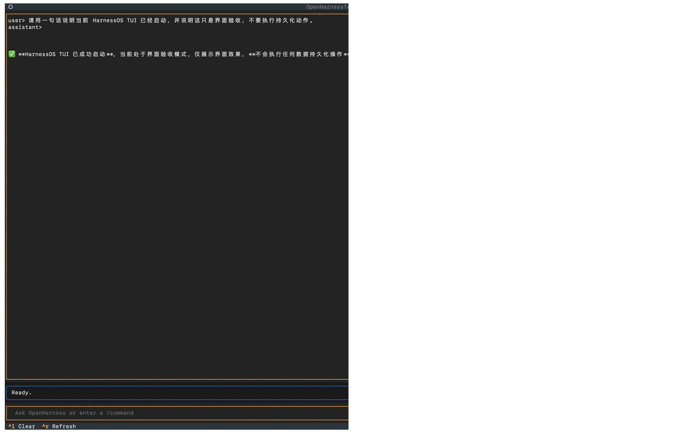
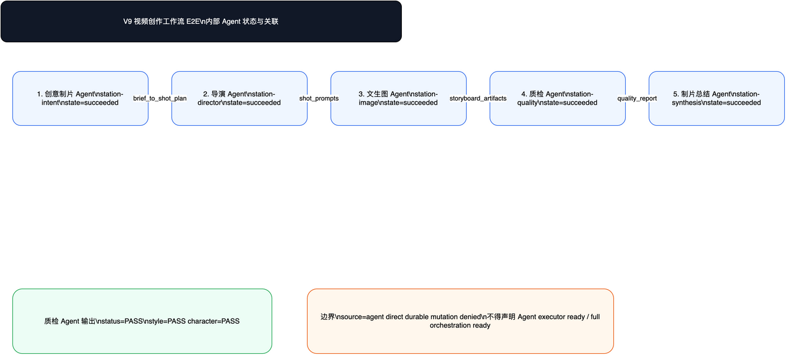

US-V9-01 · 受控执行器动作审查
PASS runtime-backed
四个 allowlisted operation、source=agent deny、evidence chain
Owner stage: V9-2
本报告把“罗马广场多 Agent 讨论”“并行 Agent 编排”“视频分镜工作流”“自然语言优化”等用户可见能力，从隐藏 runtime 数据提升为可审、可点开、可复核的验收入口。
PASS V9 用户场景覆盖审查通过，coverage_gaps=[]。
这是特殊验收阶段，不是新增生产能力声明。
{
"status": "PASS",
"scenario_count": 9,
"covered_runtime_scenarios": 8,
"coverage_gaps": [],
"boundary_flags": {
"agent_executor_claim_allowed": false,
"full_orchestration_claim_allowed": false,
"autonomous_coding_claim_allowed": false,
"complete_studio_claim_allowed": false,
"production_claim_allowed": false
}
}
PASS runtime-backed
四个 allowlisted operation、source=agent deny、evidence chain
Owner stage: V9-2
PASS runtime-backed
serial / parallel / fan-out / fan-in / recovery / lineage
Owner stage: V9-3
PASS runtime-backed
plan / diff proposal / sandboxed test / review / no auto commit
Owner stage: V9-4
PASS runtime-backed
workspace boundary / command tier / transcript / denial evidence
Owner stage: V9-5
PASS runtime-backed
BFF/DTO / read-only panels / manual confirmation
Owner stage: V9-6
PASS dashboard aggregation
stage evidence / claim scan / redaction scan / drawio XML
Owner stage: V9-8
PASS runtime-backed
role-specific agents / multi-turn messages / attribution synthesis
Owner stage: V9-3
PASS runtime-backed
provider-backed storyboard images / quality Agent / TUI evidence refs
Owner stage: V9-3/V9-6
PASS runtime-backed
WorkflowDiff proposal / no mutation before confirmation
Owner stage: V9-6
每个场景都按“用户是谁、想完成什么、怎么体验、应该看到什么、如何审计、边界是什么”组织，避免验收只停留在状态表。
PASS runtime-backed V9-2
用户画像
工作流管理员或产品负责人
用户目标
确认系统只能执行受控白名单动作，并且任何 Agent 来源的直接写入都被拒绝。
什么时候用
当用户要启动、重跑、写入产物或创建质量评价时，用这个场景审查 V9-2 受控执行器是否仍在权限边界内。
审计重点
重点核查受控执行器没有扩大为通用 Agent executor，也没有开放 connector.call 或 external_llm.call。
边界
该场景不证明完整 Agent executor 或 production controlled executor。
用户最小操作步骤
预期产出
验收标准
证据入口
PASS runtime-backed V9-3
用户画像
需要审查多 Agent 协作可靠性的项目负责人
用户目标
看到一个工作流如何拆成串行、并行、fan-out、fan-in，并在失败恢复后保留 attempt 和 artifact lineage。
什么时候用
当用户关心多个 Agent/工位是否真的被编排，而不是单一脚本顺序跑完时，用这个场景验收。
审计重点
重点看 fan-out/fan-in 是否有真实 JSON 证据，而不是只在图里画了并行。
边界
该场景证明 bounded orchestration runtime slice，不证明 full multi-Agent orchestration ready。
用户最小操作步骤
预期产出
验收标准
证据入口
PASS runtime-backed V9-4
用户画像
希望用 AI 辅助开发但不想让系统自动提交代码的工程负责人
用户目标
让系统生成计划、diff proposal、测试建议和 review handoff，但不自动 commit、push 或 deploy。
什么时候用
当用户想把自然语言开发目标交给工作流处理，但仍要求人类审核最终改动时使用。
审计重点
重点检查 AI 只生成 proposal，不把 proposal 伪装成已经被批准的代码变更。
边界
该场景不证明 autonomous coding workflow ready。
用户最小操作步骤
预期产出
验收标准
证据入口
PASS runtime-backed V9-5
用户画像
安全负责人或需要审查终端自动化边界的工程负责人
用户目标
确认 terminal worker 只能在 workspace sandbox 内执行受控命令，并捕获 transcript 和 diff。
什么时候用
当用户想让工作流调用终端做只读检查、测试或受限产物提案时使用。
审计重点
重点检查 terminal worker 没有变成 unrestricted shell。
边界
该场景不证明 unrestricted terminal worker 或 production terminal automation。
用户最小操作步骤
预期产出
验收标准
证据入口
PASS runtime-backed V9-6
用户画像
需要在网页控制台审查工作流状态的运营用户
用户目标
通过 Product Console / Thin Web Console 查看 runtime report、evidence review 和手动确认入口。
什么时候用
当用户需要可视化审查工作流结果，而不是直接改 runtime truth 时使用。
审计重点
重点检查 UI 没有隐藏执行按钮，也没有绕过 BFF/DTO 写 runtime。
边界
该场景不证明 complete Workflow Studio ready。
用户最小操作步骤
预期产出
验收标准
证据入口
PASS dashboard aggregation V9-8
用户画像
最终验收审计员
用户目标
从一个看板确认 V9 各阶段证据、用户场景、claim scan、redaction scan 和 drawio XML 是否通过。
什么时候用
当用户要做最终验收或外部审计前复核时使用。
审计重点
重点检查最终看板只是证据聚合，不替代每个 runtime 场景证据。
边界
该场景本身是 dashboard aggregation，因此不要求 runtime_backed=true。
用户最小操作步骤
预期产出
验收标准
证据入口
PASS runtime-backed V9-3
用户画像
想用多 Agent 做观点讨论、研究辩论或创意评审的用户
用户目标
创建一个罗马广场式讨论，让哲学家、工程师、历史学家、伦理学家和主持 Agent 围绕同一问题发言、互相引用并输出综合结论。
什么时候用
当用户需要不同身份的 Agent 互相质询、保留观点出处、输出共识和分歧时使用。
审计重点
重点检查讨论不是一段单模型文本，而是多 Agent 角色、消息引用和综合产物的结构化证据。
边界
该场景不证明通用多人聊天产品，也不证明 full multi-Agent orchestration ready。
用户最小操作步骤
预期产出
验收标准
证据入口
PASS runtime-backed V9-3/V9-6
用户画像
短视频创作者或小工作室制片人
用户目标
输入一个短视频点子，让系统生成创作工作流、统一风格分镜图、质检报告和证据链。
什么时候用
当用户想快速验证视频创意、看分镜视觉方向、并确认输出经过质量 Agent 审查时使用。
审计重点
重点检查图像文件、质检报告和真实 TUI 截图是否一起出现，避免只展示静态概念图。
边界
该场景不证明生产级视频制作平台或无限制外部 provider 调用。
用户最小操作步骤
预期产出
验收标准
证据入口
PASS runtime-backed V9-6
用户画像
希望通过自然语言迭代工作流的产品/运营用户
用户目标
用自然语言提出优化要求，让系统生成 WorkflowDiff proposal，而不是直接修改已运行工作流。
什么时候用
当用户想调整流程、角色、工位或输出格式，但仍要求人工确认后才应用时使用。
审计重点
重点检查自然语言优化仍是 proposal-first，而不是自动编辑工作流。
边界
该场景不证明 autonomous workflow editing ready。
用户最小操作步骤
预期产出
验收标准
证据入口
{
"serial_parallel_fan_in_fan_out": "PASS",
"attempt_history": "PASS",
"artifact_lineage": "PASS",
"failure_recovery": "PASS",
"lost_worker_recovery": "PASS"
}
证据文件：fan-out-dispatches.json、fan-in-join-decisions.json、attempt-history.json、artifact-lineage.json、lost-worker-recovery-decisions.json。
| Agent | Role | Goal | Skill / MCP |
|---|---|---|---|
| philosopher_agent | 哲学家 Agent | 界定自由、欲望和技术依赖之间的张力。 | skill://v9-3/philosophical-argument mcp://v9-3/evidence-readonly |
| engineer_agent | 工程师 Agent | 说明技术如何扩展行动空间，同时指出系统依赖风险。 | skill://v9-3/system-tradeoff-analysis mcp://v9-3/evidence-readonly |
| historian_agent | 历史学家 Agent | 用印刷术、工业化和互联网的历史类比约束讨论。 | skill://v9-3/historical-comparison mcp://v9-3/evidence-readonly |
| ethicist_agent | 伦理学家 Agent | 审查自动化是否削弱人的责任、选择和退出权。 | skill://v9-3/ethics-risk-review mcp://v9-3/evidence-readonly |
| moderator_agent | 主持与综合 Agent | 组织多轮讨论，保留 attribution_refs，并输出综合结论。 | skill://v9-3/attributed-synthesis |
| Turn | Agent | Kind | Argument summary | References |
|---|---|---|---|---|
| 1 | philosopher_agent | argument | 技术进步本身不必然削弱自由；真正的风险是人把判断权交给不可审计的系统。 | |
| 1 | engineer_agent | counterpoint | 工具会扩大行动范围，但如果没有权限、日志和人工确认，系统便利会变成事实上的路径锁定。 | roman-msg-01-philosopher-opening |
| 2 | historian_agent | historical_context | 历史上新工具常同时扩展表达和制造新依赖；关键差异在于制度是否提供可迁移性和纠错渠道。 | roman-msg-02-engineer-response |
| 2 | ethicist_agent | challenge | 如果用户不能理解、拒绝或撤销自动化建议，所谓增强能力会转化为责任不对等。 | roman-msg-01-philosopher-opening, roman-msg-02-engineer-response |
| 3 | moderator_agent | synthesis | 共识：技术扩展自由必须以可解释、可拒绝、可审计为条件。分歧：技术依赖是自由的新形式还是自由的折损。 | roman-msg-01-philosopher-opening, roman-msg-02-engineer-response, roman-msg-03-historian-context, roman-msg-04-ethicist-challenge |
该场景包含文生图 provider-backed 分镜、质检 Agent、真实 TUI 截图和 drawio 工作流状态图。






| Check | Status |
|---|---|
| character_bible_consistent | PASS |
| forbidden_completion_claims_absent | PASS |
| image_files_exist_and_nonempty | PASS |
| provider_payload_not_stored | PASS |
| real_tui_screenshots_present | PASS |
| source_agent_direct_mutation_denied | PASS |
| storyboard_shot_count_is_four | PASS |
| style_bible_consistent | PASS |
| Scenario | Title | Stage | User-visible capability | Status | Runtime backed | Evidence refs | Visible checks |
|---|---|---|---|---|---|---|---|
| US-V9-01 | 受控执行器动作审查 | V9-2 | 四个 allowlisted operation、source=agent deny、evidence chain | PASS | True | [] | |
| US-V9-02 | 并行 Agent 编排审查 | V9-3 | serial / parallel / fan-out / fan-in / recovery / lineage | PASS | True | [ "serial_parallel_fan_in_fan_out=PASS", "attempt_history=PASS", "artifact_lineage=PASS" ] | |
| US-V9-03 | 代码工作流 proposal-only 审查 | V9-4 | plan / diff proposal / sandboxed test / review / no auto commit | PASS | True | [] | |
| US-V9-04 | 终端 worker sandbox 审查 | V9-5 | workspace boundary / command tier / transcript / denial evidence | PASS | True | [] | |
| US-V9-05 | Workflow Studio 证据审查 | V9-6 | BFF/DTO / read-only panels / manual confirmation | PASS | True | [] | |
| US-V9-06 | 最终验收看板审查 | V9-8 | stage evidence / claim scan / redaction scan / drawio XML | PASS | False | [] | |
| US-V9-07 | 罗马广场多 Agent 讨论 | V9-3 | role-specific agents / multi-turn messages / attribution synthesis | PASS | True | [
"role_agents=5",
"messages=5",
"message_graph_edges=8",
"acceptance_checks={'at_least_two_discussion_turns': 'PASS', 'attribution_preserving_synthesis': 'PASS', 'message_refs_between_agents': 'PASS', 'role_specific_agents_visible': 'PASS', 'source_agent_direct_mutation_denied': 'PASS'}"
] | |
| US-V9-08 | 视频创作分镜工作流 | V9-3/V9-6 | provider-backed storyboard images / quality Agent / TUI evidence refs | PASS | True | [] | |
| US-V9-09 | 自然语言优化工作流 | V9-6 | WorkflowDiff proposal / no mutation before confirmation | PASS | True | [] |
本页只证明 V9 用户场景 ready for review 的覆盖情况；不得解释为 Agent executor ready、full multi-Agent orchestration ready、autonomous coding workflow ready、complete Workflow Studio ready 或 production ready。